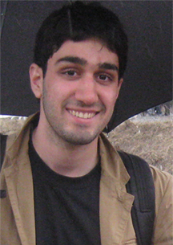

|

|
The Autonomy Lab builds life-like machines. Our goal is to increase
the autonomy (i.e. self-control and self-maintenance) of robots and
other machines.
There are two main reasons to study autonomous machines:
- Scientific: an autonomous machine is a concrete test of
hypotheses about mechanisms of intelligent behaviour. We come at this
from two directions: a bottom-up approach examining the necessary and
sufficient conditions for rational behavior; and a top-down approach
realizing and testing models of human and animal intelligence.
- Economic: by definition, autonomous machines can do more
work than those which require human supervision. Autonomous robots could make society more efficient by enabling new
kinds of industry, science and exploration.
The aquisition and management of resources such as energy and space
is a fundamental, unavoidable task for all living things. From an
ecological perspective, intelligent behaviour can be seen as rational
manipulation of resources. This observation underlies our approach to
building autonomous systems.
Our research interests include:
- Highly autonomous, long-lived robots
- Robot and animal foraging behaviour
- Large-population multi-robot systems and mitigating spatial interference
- Minimalist, micro and very low-power robots
- Biologically-inspired robots
- Artificial life
- Robot simulation, programming and research tools
The Lab is directed by Richard Vaughan. Our computer systems are managed by Mani Monajjemi.
|
(old news)
|